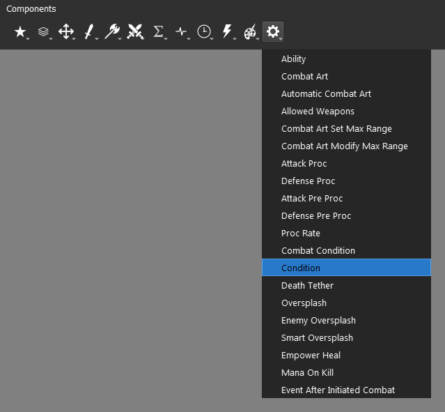
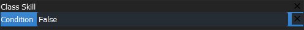
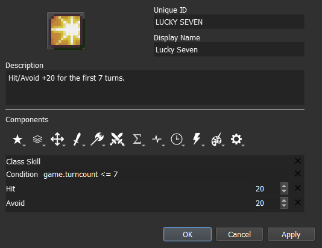
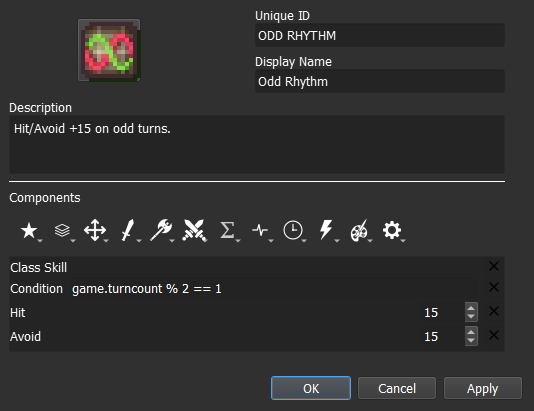
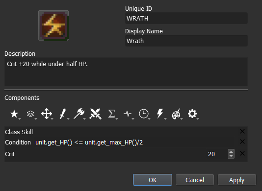
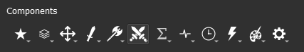
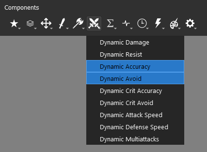
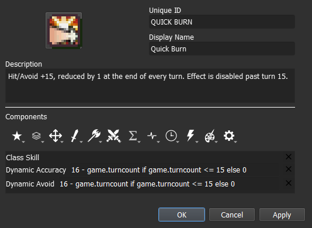
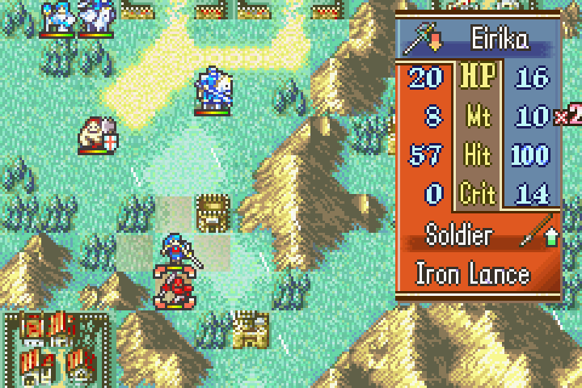

Originally written by Hillgarm. Last Updated 2022-09-01
2. Conditional Passives I - Lucky Seven, Odd Rhythm, Wrath and Quick Burn
Many skills have conditions to be activated, even the ones that have passive effects. In this guide we will take a look at the basic conditions for passive skills.
As a reminder, Lex Talionis is developed in Python, so the conditions set by the user will also be subject to the same syntax.
INDEX
Required editors and components
Skill descriptions
Step 1: Create a Class Skill
Step 2.A: Add the combat components
Step 3: Add the Condition component
Step 4: Set the condition
Step 4.A: [Lucky Seven] Set a simple condition
Step 4.B: [Odd Rhythm] Set a condition with an expression
Step 4.C: [Wrath] Set a condition with an expression using properties
Step 2.B → 4.D: [Quick Burn] Add the dynamic components
Step 5: Test the stat alterations in-game
Required editors and components
Skills:
Attribute components - Class Skills
Combat components - Avoid, Hit and Crit
Advanced components - Condition
Dynamic components - Avoid and Accuracy
Objects, Attributes and Properties:
game - turncounter
unit - get_HP() and get_max_HP()
Skill descriptions
Lucky Seven - Hit/Avoid +20 for the first 7 turns.
Odd Rhythm - Hit/Avoid +15 on odd numbered turns.
Wrath - Crit +20 while under half HP.
Quick Burn - Hit/Avoid +15, reduced by 1 at the end of every turn. Effect is disabled past turn 15.
Step 1: Create a Class Skill
Step 2.A: Add the combat components
Step 3: Add the Condition component
There are many conditional and trigger components, for this tutorial we will use the Condition component that can be found within the Advanced Components menu, represented by the Gear icon.

The Condition component requires a statement. If the condition is true, then the rest of the skill takes effect. If the condition is false, then the rest of the skill is disabled.

Here are some few illustrative examples:
Statement |
Output |
|---|---|
Orange is Fruit |
True |
Orange is not Fruit |
False |
Orange is not Vegetable |
True |
4 + 2 == 6 |
True |
6 == 4 - 2 |
False |
3 + 0 > 1 |
True |
Orange is Angry |
Invalid, return |
Orange == Apple |
False |
Orange > Apple |
Invalid, return |
Very basic components like Class Skill, Negative, and Hidden won’t be affected by it. It is highly recommended to test if the Condition component is interacting with whichever other component you may use.
Step 4: Set the condition
Conditions can be done by doing a direct comparison or adding expressions to either, or even both, of the sides. The required elements will be dependent on the type of variables you need to access and which operations can be performed with them.
Both Lucky Seven and Odd Rhythm will need the information regarding the current turn. This value is stored in the attribute turncount, found in the class game, and is updated automatically after the enemy phase.
We can reference it with the following syntax:
game.turncount
Step 4.A: [Lucky Seven] Set a simple condition
Simple conditions only take the bare minimum for it to work, two elements and one operator. Some of these conditions may have multiple syntaxes.
The syntax for conditions is:
{A} <operator> {B}
Here’s the list of all operators:
Operator |
Explanation |
Notes |
|---|---|---|
== |
A is equal to B |
- |
!= |
A is different from B |
- |
> |
A is greater than B |
Numeric only |
< |
A is smaller than B |
Numeric only |
>= |
A is greater or equal to B |
Numeric only |
<= |
A is smaller or equal to B |
Numeric only |
is |
A is equal to B |
Object only |
is not |
A is different from B |
Object only |
in |
A exist in B |
B must be an iterable |
not in |
A doesn’t exist in B |
B must be an iterable |
Now that we know all the syntaxes, it’s time to list all our pieces.
The turn counter variable stores the number corresponding to the current turn.
Lucky Seven effect only applies for the first 7 turns
We need two elements to settle a condition
These will converge in the following condition, where the skill will be active for the first 7 turns, and then disable afterwards:
game.turncount <= 7
Our skill should end up like this:

Step 4.B: [Odd Rhythm] Set a condition with an expression
We’ll expand from where we left at the previous step. The major change will be the expression used as a replacement for one of our elements, along a different operator that fits our requirements.
Expressions use operators similar to regular mathematics operators, with some few distinctions.
The syntax for expressions is:
{A} <operator> {B}
Here’s the list of all operators:
Operator |
Explanation |
Notes |
|---|---|---|
+ |
Addition |
|
- |
Subtraction |
|
* |
Multiplication |
|
** |
Exponentiation |
|
/ |
Division |
|
// |
Floor division |
Will return an integer, rounded down |
% |
Modulus |
Returns the remainder of a division |
By definition, and odd number is a number that has a remainder when divided by 2. So our expression, and condition, should be:
game.turncount % 2 == 1
Our skill should end up like this:

Step 4.C: [Wrath] Set a condition with an expression using properties
Again, we will expand from where we left at previous side step. This time, we’ll use expressions in both sides of our condition, and they will use two new variables.
For Wrath, we’ll need to retrieve information regarding the skill holder. To do so, we need to call the unit object. This object is used to reference the holder/wielder/user of a skill or item. It takes the direct unit using it which may or not be the actual target of the skill or item.
For current HP and maximum HP values, we need to call the respective methods from the unit object:
get_hp()
and
get_max_hp()
With these in hand, we can finally set our condition as:
unit.get_hp() <= unit.get_max_hp() / 2
Our skill should end up like this:

Step 2.B → 4.D: [Quick Burn] Add the Dynamic Components
At last, we will get into a new type of component that can handle a non-fixed value. Instead of a static number, it can take formulas or other attributes as its value, such as the user level, the number of allies within a given range or even an unrelated different stat. Dynamic Components can also carry condition, including expressions, within them, which allows it to provide two different outputs depending on the result.
Dynamic battle components are represented by the Crossed Swords icon. The only exception is the Dynamic Damage Multiplier component, found within the Combat Components.

For Quick Burn, we will need to use the closest approximation available. These will be Dynamic Accuracy component as the Hit component replacement and Dynamic Avoid component as the Avoid component replacement.

We can then add our formula using the elements from steps 3 and 4.
Since it should only matter for the first 15 turns, it will end up as something like:
game.turncount <= 15
Since we are using Dynamic components, we can chose between using the Condition component or adding the condition to the Dynamic component itself.
In this particular case, it can be a matter of preference but we will add it to the Dynamic component to expand our reach of possibilities.
The syntax will be different from what we did so far as it needs the whole If-Else statement to work.
It uses the following structure:
{True value} if {condition} else {False value}
Now we add our values and condition to get:
16 - game.turncount if game.turncount <= 15 else 0
or
max(0, 16 - game.turncount)
Either one will work. Our skill should end up like this:

One important thing to know about Dynamic Components is that they won’t be displayed in on the unit information window when inspected. They are only added once the game calculates the attack. You need to declare an attack in order to see the stats change. There’s no need to execute it however.
